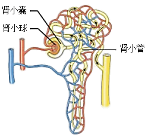
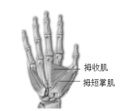

2024年北京市西城区中考生物真题 · 选择题 第11、12、13、14、15题 · 对应解析
11. 图是肾单位结构模式图，以下相关叙述错误的是（ ）

A. 肾单位是形成尿液的基本结构
B. 肾小球可滤过血浆中所有物质
C. 肾小囊中的原尿里含有葡萄糖
D. 肾小管长而弯曲有利于重吸收
【答案】B
【解析】
【分析】每个肾单位由肾小体和肾小管组成，肾小体由肾小球和肾小囊组成。肾小球是血管球，由入球小动脉分出的许多毛细血管相互缠绕而成，这些毛细血管汇集成出球小动脉。肾小囊套在肾小球的外面，下接肾小管。肾小管细长而曲折，周围缠绕着大量的毛细血管。肾小囊和肾小管组成的结构，就像一个“小漏斗”。尿的形成包括肾小球和肾小囊内壁的滤过作用，肾小管的重吸收作用两个过程。
【详解】Ａ．肾脏是形成尿液的器官。每个肾脏包括大约100万个结构和功能单位，叫做肾单位。肾单位是形成尿液的基本结构，Ａ正确。
Ｂ．当血液流经肾小球时，除血细胞和大分子的蛋白质以外，血浆中的一部分水、无机盐、葡萄糖和尿素等物质，都可以经过肾小球过滤到肾小囊中，Ｂ错误。
Ｃ．由上述分析可知：血浆中的一部分水、无机盐、葡萄糖和尿素等物质，都可以经过肾小球过滤到肾小囊中，形成原尿，Ｃ正确。
Ｄ．肾小管细长而曲折，周围缠绕着大量的毛细血管，有利于其重吸收营养物质，Ｄ正确。
故选Ｂ。
【点睛】解题的关键是识记并理解肾单位结构和功能。
12. 人体神经调节的基本方式是（ ）
A. 反射B. 运动C. 神经元D. 反射弧
【答案】A
【解析】
【分析】人体神经调节的基本方式是反射，包括非条件反射和条件反射。
【详解】A．人体神经调节的基本方式是反射，反射是人或动物通过神经系统对体内外各种刺激作出的规律性反应，A符合题意。
B．动物的运动主要靠肌肉的收缩与舒张，如人在做屈肘运动时，肱二头肌收缩，肱三头肌舒张，B不符合题意。
C．神经元又叫神经细胞，是神经系统的结构和功能单位，神经元的基本结构包括细胞体和突起两部分。神经元的主要功能是接受刺激，并传导神经冲动，C不符合题意。
D．反射活动的结构基础称为反射弧，包括感受器、传入神经、神经中枢、传出神经、效应器，任何一个环节中断反射不能进行，D不符合题意。
故选A。
13. 握手是人与人之间表示友好的一种礼仪。握手时，大拇指要向手心运动。如图是人右手掌心面骨骼及部分肌肉示意图，下列相关叙述错误的是

A. 拇短掌肌两端附着在同一块骨上B. 握住手时，拇收肌处于收缩状态
C. 握手时，骨骼肌牵拉骨绕关节运动D. 握手动作在神经系统调节下完成
【答案】A
【解析】
【分析】骨骼肌包括肌腹和肌腱，肌腹是骨骼肌中间较粗的部分，受刺激而收缩；肌腱是骨骼肌两端较细的部分，跨关节附在不同的骨上，有固定作用。骨骼肌有受刺激而收缩的特性，当骨骼肌受神经传来的刺激收缩时，就会牵动着它所附着的骨，绕着关节转动，于是躯体就产生了运动。在运动中，骨起杠杆作用，关节起支点作用，骨骼肌收缩产生动力。运动并不是仅靠运动系统来完成，它需要神经系统的控制和调节，它需要能量的供应，因此还需要消化系统、呼吸系统、循环系统等系统的配合。
【详解】A．拇短展肌两端附着在不同的两块骨上，A错误。
B．握住手时，大拇指向掌心靠近，拇收肌处于收缩状态，B正确。
C．握手时，大拇指需要向掌心靠近，此过程是骨骼肌牵拉骨绕关节运动产生的，C正确。
D．运动动作的产生是在神经系统的调节下，其他系统的配合下完成的，D正确。
故选A。
14. 在听觉形成的过程中，接受刺激产生兴奋的结构位于（ ）
A. 耳廓B. 鼓膜C. 听小骨D. 耳蜗
【答案】D
【解析】
【分析】耳朵的结构：耳郭、外耳道、鼓膜、鼓室、听小骨、耳蜗、前庭、半规管等。
【详解】A．耳廓的作用是收集声波，错误。
B．鼓膜的作用是能感应由外耳道传入的声波，产生振动并牵动附着其上的听小骨链，使声波的刺激传进中耳，错误。
C．听小骨的作用是能把鼓膜的振动传给内耳，传导过程还像放大器一样，把声音信号放大数倍，所以即使很轻微的声音人们也能听到。听骨为人体中最小的骨，又称为听小骨，由锤骨、砧骨及镫骨组成，错误。
D．耳蜗的作用：耳蜗具有传音、感音、平衡功能。耳蜗位于前庭的前内方，形似蜗牛壳，为螺旋形骨管，是内耳的一部分，与前庭和半规管组成内耳又称迷路。耳蜗的蜗管内含淋巴是耳蜗的传音结构；耳蜗的螺旋器是听觉感受器，内有多种听觉感受细胞，正确。
故选D。
【点睛】掌握耳朵的结构和功能是解题关键。
15. 下列可以促进生殖器官发育，激发并维持第二性征的激素是（）
A. 胰岛素B. 性激素
C. 生长激素D. 甲状腺激素
【答案】B
【解析】
【分析】性激素是指由动物体的性腺，以及胎盘、肾上腺皮质网状带等组织合成的甾体激素，具有促进性器官成熟、第二性征发育及维持性功能等作用。雌性动物卵巢主要分泌两种性激素——雌激素与孕激素，雄性动物睾丸主要分泌以睾酮为主的雄激素。性激素的化学本质是脂质。
【详解】Ａ．胰岛素的主要功能是调节糖在体内的吸收、利用和转化等，如促进血糖合成糖原，加速血糖的分解，从而降低血糖的浓度，使血糖维持在正常水平，Ａ错误。
Ｂ．由分析可知：性激素具有促进性器官成熟、第二性征发育及维持性功能等作用，Ｂ正确。
Ｃ．垂体分泌的生长激素（蛋白质类物质），作用于全身细胞，具有促进生长，促进蛋白质合成和骨生长的作用，Ｃ错误。
Ｄ．甲状腺分泌的甲状腺激素（氨基酸衍生物），几乎作用于全身组织细胞，具有促进代谢活动；促进生长发育（包括中枢神经系统的发育），提高神经系统的兴奋性的作用，Ｄ错误。
故选Ｂ。
【点睛】解题的关键是识记并理解常见激素及其主要作用。